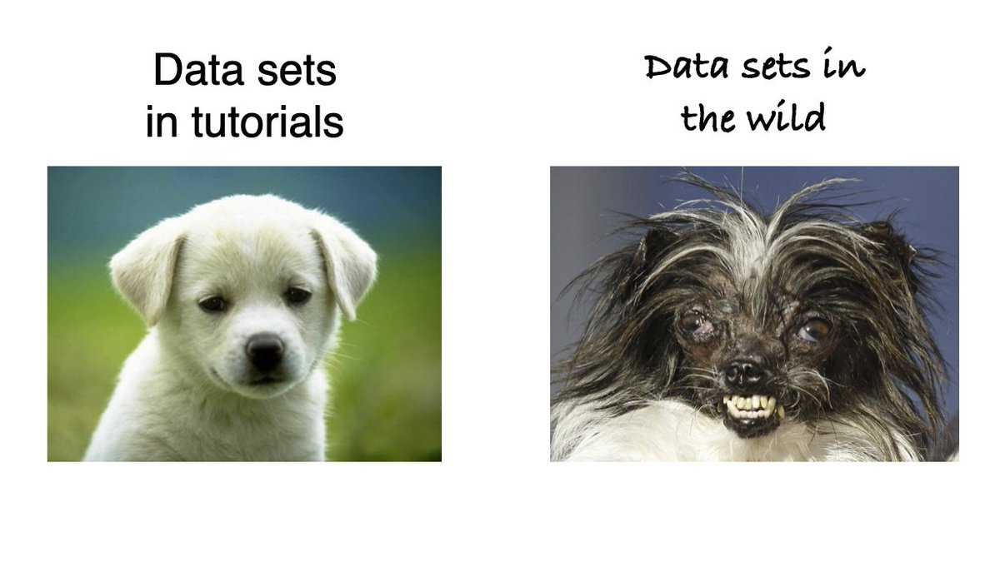
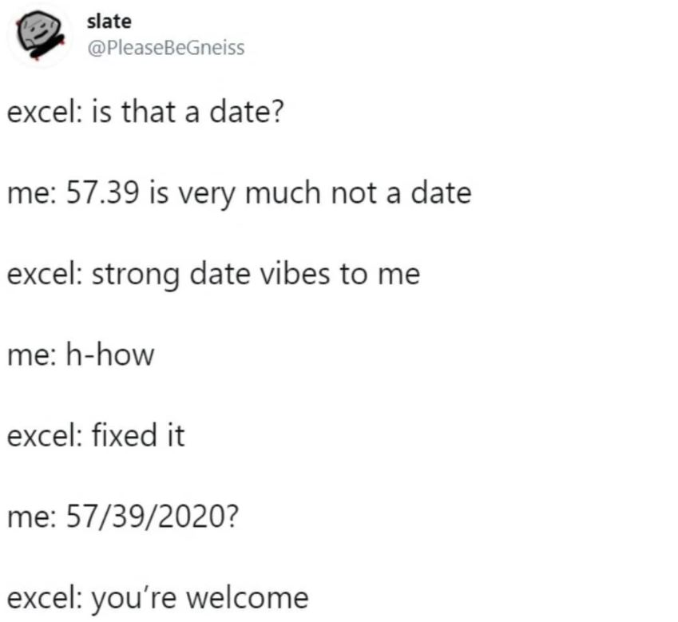
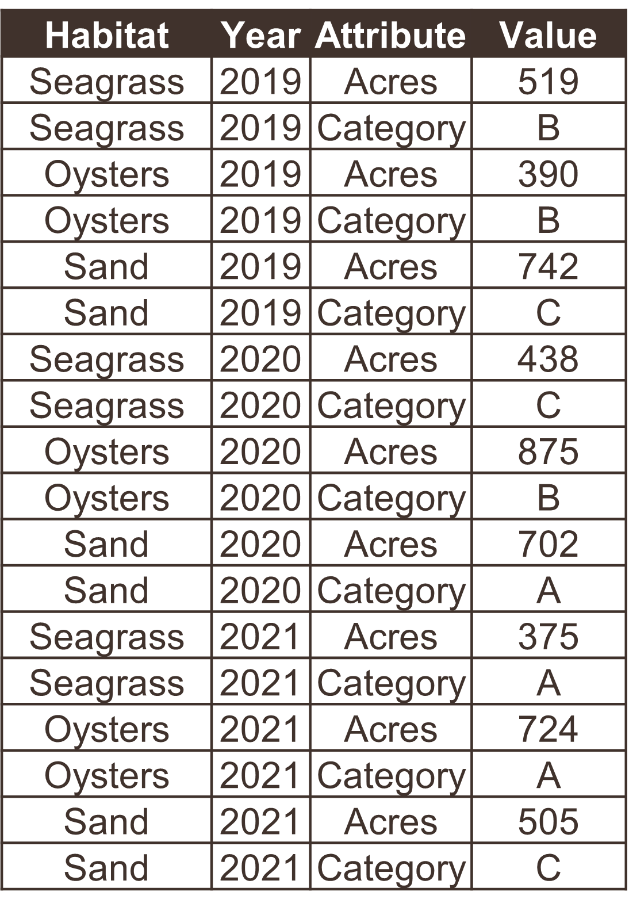
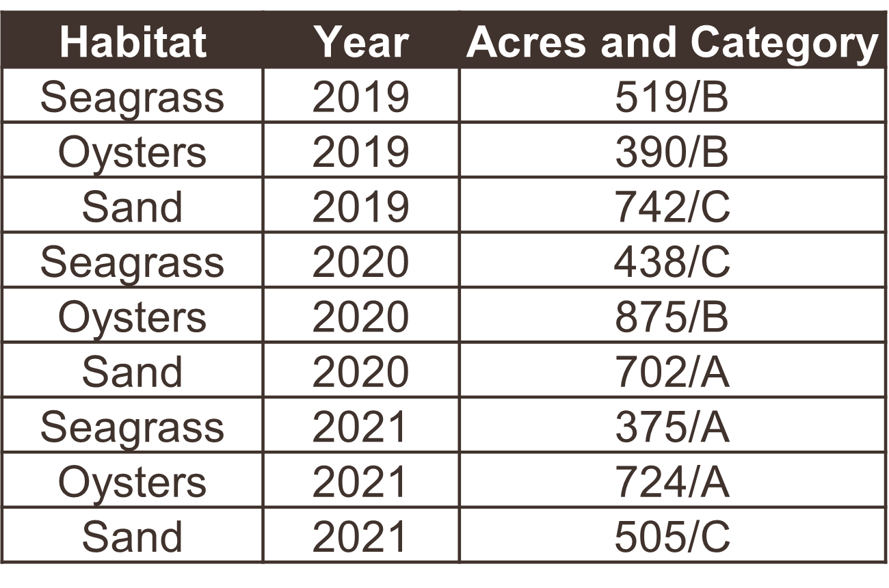
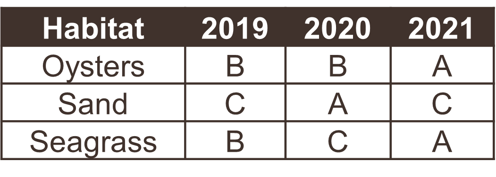
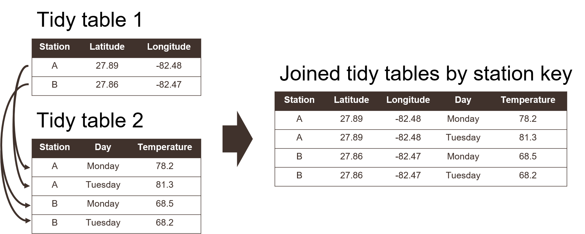
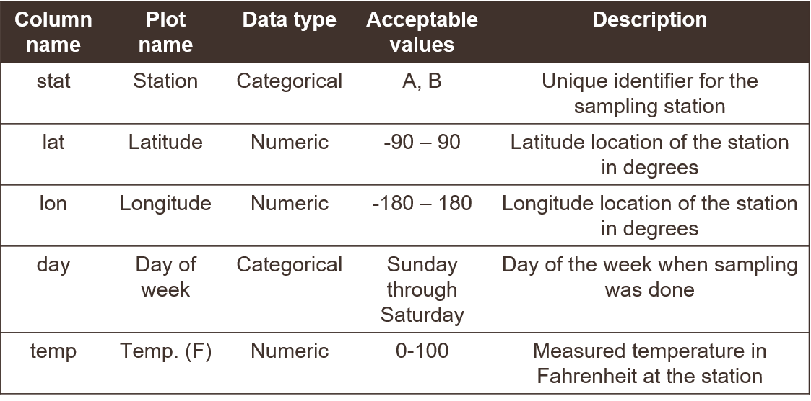
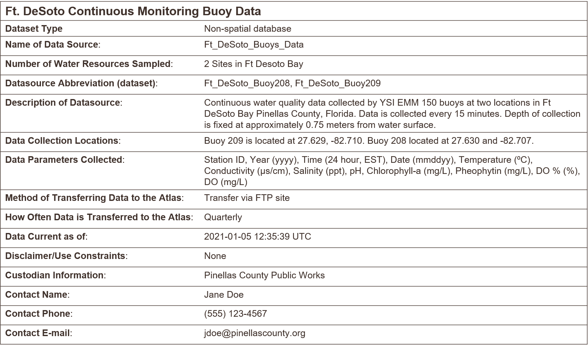

3 Open science for impactful products
3.1 Goals and motivation
This is the third module in our workshop on open science. Now we focus on core principles for data management as the foundation for open science. We discuss the role of data management to support decisions using open science. Then, we introduce the concepts of tidy data as a unified format for storing information. We close with a discussion of metadata tools and data repositories that allow your data to live beyond the project.
- Goal: understand best practices for data management as a key concept for open science
- Motivation: cultivate data as a living, shared resource
3.2 Data as the foundation for open science
In the last module, we talked about collaboration as the single most important activity of open science. So, why are we now talking about data management? Understanding the tools of collaboration allows you to better engage with your colleagues and partners, but open engagement will mean nothing if your data look like garbage.

You can probably recall past instances when poor data management has been a challenge for open collaboration. Here are a few real-world examples:
- A collaborator calls you on the phone asking about a historical dataset from an old report. You spend several hours tracking down this information because you don’t know where it is. The data you eventually find and provide to your collaborator has no documentation and they don’t know how to use it or use it inappropriately.
- You receive a deliverable from a project partner that was stipulated in a scope of work. This deliverable comes in multiple formats with no reproducible workflow to recreate the datasets. You are unable to verify the information, eroding your faith in the final product and making it impossible to update the results in the future.
- An annual reporting product requires using new data each year. The staff member in charge of this report spends several days gathering the new data and combining it with the historical data. Other projects are on hold until this report is updated. Stakeholders that use this report to make decisions do not trust or misunderstand the product because the steps for its creation are opaque.
Data come in many shapes and sizes, most more like the right side of the above picture. Poor data management occurs for many reasons, but these are a few of the common causes:
- What’s easy for recording data doesn’t usually translate to easy analysis
- Egregious use of Excel as data management software
- Metadata is a chore that is often an afterthought
It’s often said that 90% of working with data is cleaning (or “wrangling”), whereas actual analysis and interpretation is a small fraction of your total effort. Using better data management practices will not only help you save time, it’s also a service for your colleagues, potential collaborators, and your future self. Therefore, better data management leads to more open science.
The FAIR principles outlined in the first module are especially useful when working with data for open science applications. Many of the collaborative tools in the second module can facilitate application of FAIR data. In this module, we’ll go a step further to discuss how data structure, including metadata, can produce a FAIR dataset.
3.3 Principles of tidy data
Tabular data allow you to store information, where observations are in rows and variables are in columns. It’s very common to try to make tabular data more than it should be. Unless you spend a lot of time working with data, it can be difficult to recognize common mistakes that lead to table abuse.
Before we get into tidy data, we need to discuss some of the downfalls of Excel as a data management system. There are many examples that demonstrate how Excel has contributed to costly mistakes through table abuse or outright negligence, often to the detriment of science (Ziemann, Eren, and El-Osta 2016).

Excel allows you to abuse your data in many ways, such as adding color to cells, embedding formulas, and automatically formatting cell types. This creates problems when the organization is ambiguous and only has meaning inside the head of the person who created the spreadsheet. Embedding formulas that reference specific locations in or across spreadsheets is also a nightmare scenario for reproducibility.

If you absolutely must use Excel to store data, the only acceptable format is a rectangular, flat file. This is typically saved as a .csv file. What do we mean by this?
A rectangular file:
Store data only in rows and columns in matrix format (e.g., 10 rows x 5 columns), with no “dangling” cells that have values outside of the grid or more than one table in a spreadsheet.
A flat file:
No cell formatting, no embedded formulas, no multiple spreadsheets in the same file, and data entered only as alphanumeric characters.
Broman and Woo (2018) provide an excellent guide that expands on these ideas. Essentially, these best practices force you to isolate the analysis from the data - many people use Excel to mix the two, leading to problems.
Now we can talk about tidy data. The tidy data principles developed by Hadley Wickham (Wickham 2014) are a set of simple rules for storing tabular data that have motivated the development of the wildly popular tidyverse suite of R packages (Wickham et al. 2019). The rules are simple:
- Each variable must have its own column;
- Each observation must have its own row; and,
- Each value must have its own cell.
Graphically, these rules are shown below (from Wickham and Grolemund 2017):

Using these principles may seem unnatural at first because of a difference between what’s easy for entering data versus what makes sense for downstream analyses. For example, dates are often spread across multiple columns, such as having one column for each year of data where the header indicates the year that applies to data in the column.
The following examples show five tables represented in different arrangements. Only one of the tables is tidy - which one?





Only the first table is tidy - each variable has its own column, each observation has its own row, and each value has its own cell. Table 2 violates the first rule, Table 3 violates the third rule, and tables 4a and 4b violate the first and second rules.
Table 2 is a special case where the data are mostly tidy, but represented as a long format of the same wide data in Table 1. Storing data in a long format is not necessarily wrong and, in fact, is a common format for databases. There are pros and cons to both, depending on the intended analysis. Here are two examples of some water quality data you might encounter in the wild, one wide and one long.
Using a tidy format also allows you to more easily join data between tables. This is a common task when you have information spread between different tables because: 1) it might not make sense to keep the data in the same table, and 2) the analysis depends on information from both tables. Tidy data shared between tables can be linked using a “key” as a common identifier.

Watch and learn
Making an untidy dataset tidy using Excel (an irreproducible example).
Watch and learn
Making an untidy dataset tidy using R (a reproducible example).
Show the code
library(readxl)
library(dplyr)
library(tidyr)
# import and wrangle
dat <- read_excel('data/untidy.xlsx', skip = 1) %>%
fill(Location) %>%
pivot_longer(cols = `2019`:`2021`, names_to = 'Year', values_to = 'Acres/Category', names_transform = as.integer) %>%
separate(col = `Acres/Category`, into = c('Acres', 'Category'), sep = '/', convert = T)
dat# A tibble: 27 x 5
Location Habitat Year Acres Category
<chr> <chr> <int> <int> <chr>
1 Clear Bay Seagrass 2019 519 B
2 Clear Bay Seagrass 2020 438 C
3 Clear Bay Seagrass 2021 375 A
4 Clear Bay Oysters 2019 390 B
5 Clear Bay Oysters 2020 875 B
6 Clear Bay Oysters 2021 724 A
7 Clear Bay Sand 2019 742 C
8 Clear Bay Sand 2020 702 A
9 Clear Bay Sand 2021 505 C
10 Fish Bay Seagrass 2019 930 B
# ... with 17 more rowsExercise and discussion
Now try it on your own. Download the untidy dataset and make it tidy using your preferred software. Compare your tidied dataset with this one to see if you’ve done it right.
3.4 Data dictionaries
Once you understand the tidy principles, you’ll find that analysis is much, much easier. More importantly, this also facilitates documentation for the explicit purpose of open sharing. As responsible data stewards, we need to think of data as a living resource for open collaboration that is not just a means for more conventional scientific products (e.g., a publication). Data are increasingly being documented and cited as unique entities and we need proper documentation to help support the FAIR principles.
A good first step in documentation is to create a data dictionary. This will help us when we start creating metadata. Think of this as the specific description of the contents of a tabular data file. Developing a data dictionary not only helps with metadata, but also helps you think more clearly about your data.
A data dictionary describes column names and the type of data in each column. Simple things like how you name a data column can have larger implications for downstream analysis pipelines or interpretability of a dataset.
Here’s an example of a data dictionary for a made up dataset. Without seeing the actual data, you get a good sense of what’s included and acceptable values for adding new data.

Here we provide some general guidelines for developing your own data dictionary.
Column names
- Be as descriptive as possible while trying to keep the name as short as possible. Really long names with lots of detail can be just as frustrating as very short names with very little detail. The column name should be intuitive to point the analyst in the right direction.
- Try to avoid spaces or commas in column names since some software may interpret that as the start of a new column. Do not start a column name with a number.
- It may also be useful to identify a “plot name” column that uses proper spelling, punctuation, and units. Entries in this column can be used for making graphics that have interpretable names (e.g., using “Temp. (F)” instead of “temp” as the name of a plot axis).
- Be as descriptive as possible while trying to keep the name as short as possible. Really long names with lots of detail can be just as frustrating as very short names with very little detail. The column name should be intuitive to point the analyst in the right direction.
Data types
- Describe the type of data in each column, e.g., numerical measurements, categorical descriptors, or counts of observations (integer). Never, ever mix data types in the same column.
- If your data are continuous numeric values, try to identify an acceptable range for the values, e.g., are there minimum or maximum values that would indicate the data are out of range?
- For categorical descriptors, identify all possible categories (if feasible) that are acceptable values for the column, e.g., small, medium, or large for a qualitative descriptor of size.
- For dates, make note of the format, e.g., YYYY-MM-DD. For time, identify the timezone and if it includes daylight savings or not.
- Describe the type of data in each column, e.g., numerical measurements, categorical descriptors, or counts of observations (integer). Never, ever mix data types in the same column.
Exercise and discussion
Create a data dictionary for the tidy dataset from the previous example. Use a spreadsheet to create a table to describe the column names, data type, acceptable values, and a description.
3.5 Importance of metadata
How many times have you been sent a dataset without any idea what it contains or why it was created? How are you sure the information is valid and that your analysis takes into account the limitations of the data? How many times have you willfully sent someone a dataset without fully providing this information?
Without metadata, it’s impossible to know critical details about a dataset that can inform its analysis, and more importantly, its use to inform decision-making. Curating data should be synonymous with metadata generation and is an important part of open science. We cannot provide open data in good faith without also providing metadata.
Metadata is literally defined as “data about data”. It varies from simple text descriptions of a dataset, such as “who”, “what”, “when”, “where”, “why”, and “how”, to more formalized standards with that prepare your data for archiving in a long-term repository. The data dictionary is only part of a complete metadata description.
A useful definition is provided by Gilliland (2016):
A suite of industry or disciplinary standards as well as additional internal and external documentation and other data necessary for the identification, representation, interoperability, technical management, performance, and use of data contained in an information system.
Why don’t we see more metadata in the wild? Short answer is that it’s often an afterthought, if considered at all. Creating metadata is usually tedious and the return on investment is not apparent at onset of a project. However, the collective growth of sciences and its application to real world problems is dependent on metadata.
The US Geological Survey provides a useful document on creating Metadata in “plain language” to distill the basic information contained in a metadata file. It provides a workflow for answering the “who”, “what”, “when”, “where”, “why”, and “how” questions for metadata. Below is a brief synopsis:
What does the dataset describe?
Information here would include very basic details about the dataset including a title, geographic extent, and period of time covered by the data. For geographic extent, this may often include explicit coordinates covering the study area. Location is useful for indexing your dataset relative to others, if for example, a researcher wanted to find data for all studies in the geographic extent of Tampa Bay.
Who produced the dataset?
This would be yourself and anyone else who has made a significant contribution to the development of a dataset. Data are increasingly being used as citable resources and including individuals that were important in its generation ensures proper attribution. If someone has spent hours toiling in the field to collect the data or hours visually scanning a spreadsheet for quality control, include them!
Why was the dataset created?
Describing why a dataset was created is critically important for understanding context. If others want to use your data, they need to know if it’s appropriate for their needs. Here you would describe the goal or objectives of the research for which the data were collected. It should be clear if there are limitations in your data defined by your goals.
How was the dataset created?
Here you would describe the methods used to generate the data, e.g., field sampling techniques, laboratory methods, etc. This information is important so others can know if you’ve used proper and accepted methods for generating the data. Citing existing SOPs or methods that are recognized standards in your field would be appropriate.
How reliable are the data?
It’s also important to explicitly note instances when the data could be questionable or inappropriate to use. Here you could describe any quality assurance or quality control (QAQC) checks that were used on the data. There are often formalized ways to do so, such as codes or descriptors in tabular data defining QAQC values (e.g., data in range, below detection limits, sensor out of service, etc.).
How can someone get a copy of the dataset?
Good metadata has information on who to contact for getting the data. This contact may not be the same as who created the dataset (e.g., IT staff). For archived or publicly available data, this information is more important for who to contact should someone have questions. Information on obtaining a copy of the data should also describe any special software or licensing issues related to accessing the data.
Once you’ve gathered this information, how do you turn it into literal metadata? It depends on how deep you want to go. At it’s simplest, your metadata could be a simple text file with answers to the questions. Or it could be a specific file format used by modern data archive repositories (e.g., EML format).
Here’s an example of a bare bones metadata file. One could easily type this up in a text file or spreadsheet.

Exercise and discussion
Create a metadata file for the tidy dataset from the previous example. Just start by using your data dictionary and develop narrative answers for “who”, “what”, “when”, “where”, “why”, and “how” to describe your dataset. Get creative with your descriptions since this is a made up dataset. Enter this information into a new spreadsheet.
3.6 Data repositories
How data are treated as living, dynamic pieces of information is critical to the ethos of open science. This is especially true when the FAIR principles are invoked. Data should not live on your hard drive as something only known to yourself.
Although we will not cover data repositories in depth, it’s important to recognize the critical role that data archiving and metadata have in open science. How many times have you thought “wow, it would be great if I could have the data from this paper!” Making data open is a great way to propel science through better collaboration.
The ease of getting a dataset online depends on where you want to put the data. In most cases, your dataset should be tidy and accompanied by metadata. For simple solutions, such as FTP hosting or putting a dataset on Google Drive, all you need to do is upload the data and metadata by hand. However, this doesn’t necessarily make it findable and the permanency is uncertain.
The absolute best standard for hosting data online is through a Federated Data Repository:
An online network of connected repositories that use similar standards to collectively store data for discovery and access. Uploading a dataset to one node of a repository will make it available through all other nodes.
Such repositories follow strict but necessary guidelines to ensure your data have permanence and adhere to the FAIR principles. The data are definitely findable (e.g., through a web search), accessible (free to download), and interoperable (accepted standards are ensured). The “reproducible” aspect can be debatable, but that can be solved through other means (e.g., code sharing on GitHub).
Some examples of data repositories, most are domain-specific:
- KNB: Knowledge Network for Biocomplexity, a general purpose repository for ecological data
- HydroShare: Data and models used in hydrology
- OPC: California Ocean Protection Council, marine and coastal datasets
- OSF: The Open Science Foundation, a general location for sharing data and other research tools
Exercise and discussion
Using the tidy dataset, your data dictionary, and your metadata description from the previous exercises, we’ll archive the data on the test node of KNB. This workflow is exactly the same for the actual repository and is designed to get you comfortable adding data to an archive.
- Log in to the test archive using your ORCID information: https://dev.nceas.ucsb.edu/
- Click the submit button at the top to start the process of entering your data.
- Add the relevant metadata information in the forms (because this is a test archive, not all will be entered). The forms will be slightly different from your metadata, but enter the relevant information for the appropriate form.
- Save the dataset when you’re done and marvel at your work.